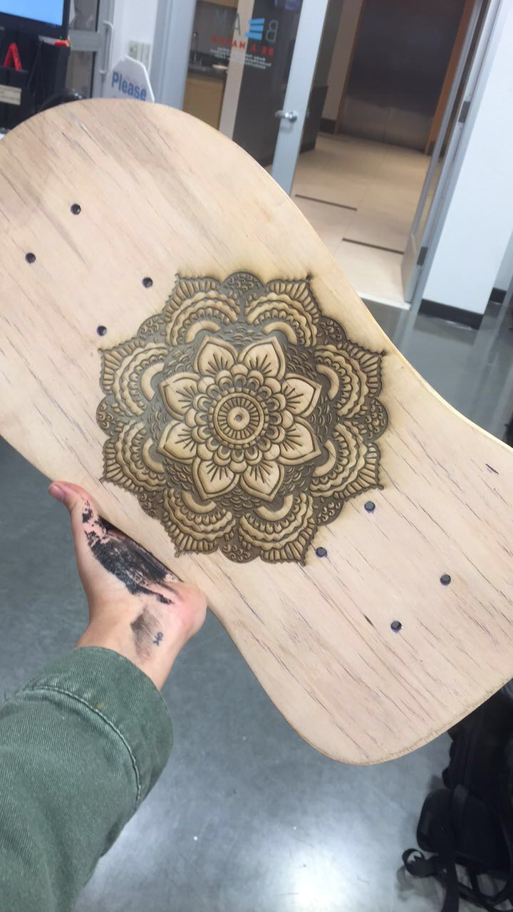

Fashion over Function For the dog toys! Made for a friend

He was a sk8r boi... a Guitar Shelf
Glass
The first of many wedding gift! my most prized possesion the birth of cosmo cosmo
Little bit of everything!
made for UNC's PPE initiativeMy first 3D design made from scratchMade with LazerzLOL outta this world!it's like dance dance revolution,, but for your fingers